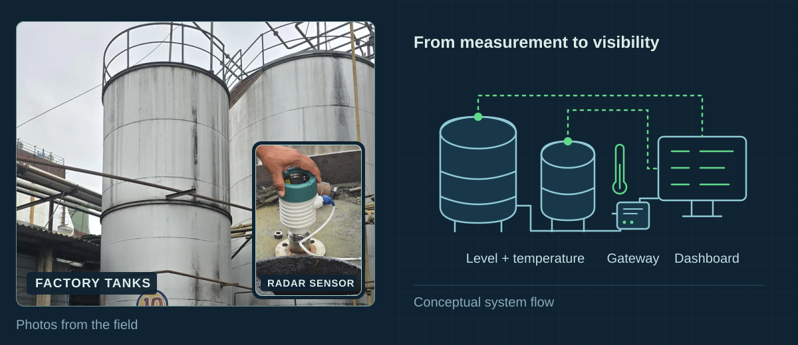
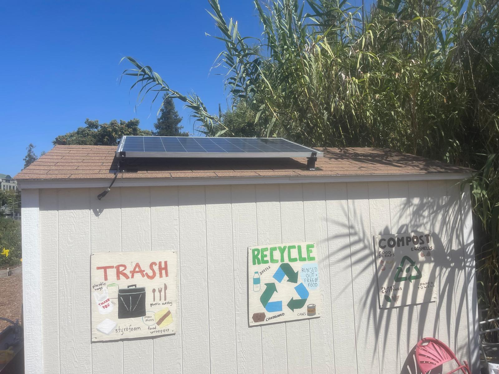

Agriculture IoT
Stay connected to the field.
Soil moisture monitoring, irrigation control and solar-powered telemetry for remote farm locations.
- Soil & environmental sensing
- Irrigation & relay control
- Solar remote telemetry
Sensors · Telemetry · Control
From soil moisture and irrigation to industrial tanks and process temperatures, FarmEasy connects real-world measurements with remote visibility, alerts and practical controls.
Two areas of focus
Start with the conditions you need to see.
Build the monitoring and controls around them.
Agriculture IoT
Soil moisture monitoring, irrigation control and solar-powered telemetry for remote farm locations.

Industrial monitoring & automation
Monitoring work across oil-factory tanks, boiler temperatures and radar level sensors.
WhatsApp updates
Tank threshold alerts, motor confirmations and PDF reports bring key updates to your WhatsApp.
Industrial alerts
Agriculture updates
Tank reporting
Field work & dashboards

Our roots are in agriculture
FarmEasy began with the need to monitor and control farm operations remotely. That work now extends to industrial measurements, with the same focus on useful data and practical integration.
Our story and approachLet’s start with your site
Tell us about your farm, tank, equipment or process.